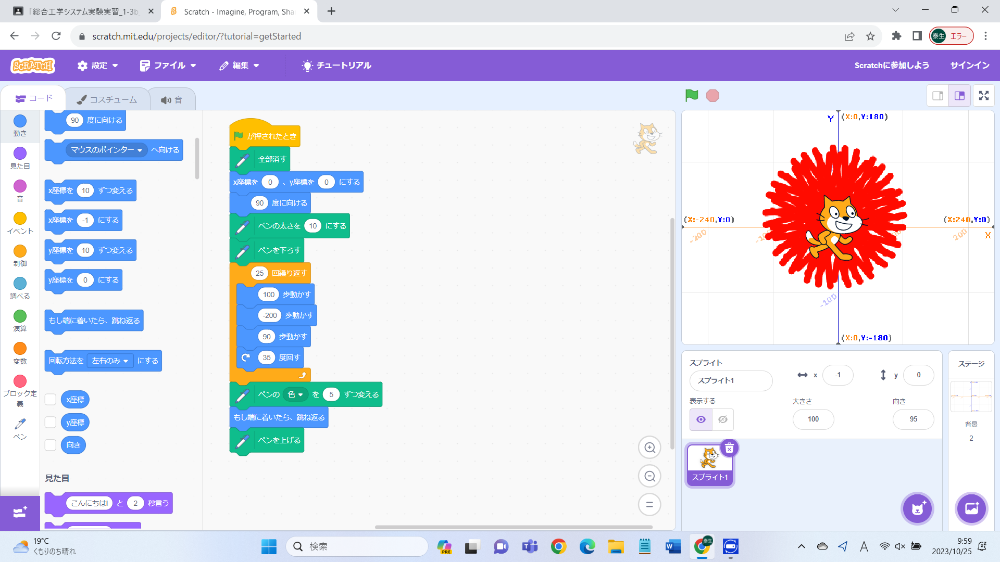

1週目のレポート ： 公大高専１年実習I-1
3b班 41番 山ちゃん
第1週目
1-1 サイエンスアート

1.内容
スクラッチを使って線を書くプログラムを作成した．猫が動いた軌跡にペンを下ろし，線を作画した．また，座標を活用し様々な模様や図形を描いた．ペンツールを拡張することも学習した．
2.
スクラッチは以前にも使用したことがあったので基礎的な使い方は知っていたがペンツールを知らなかった．よって以前からの知識と組み合わせてよりよいプログラムを作成できた．私はあまり普段からプログラミングに触れあっていないため慣れるまで時間がかかった．
1-2 ゲーム
1.内容
猫を操作して卵を拾うゲームのプログラムを作成した．この時猫と卵が当たった際に得点ができるようにした．また猫の角度を90と－90のみにして左右の動きに限るようにした．
2.感想
自分で操作できるプログラムを作成したのでプログラミングを身近に感じた．必要に応じていろいろなコマンドを使用できるscratchは有用的だなと感じた．今回作成したゲームを土台にして自分なりのプログラムを組もうと思った．
1-3 ホームページ作成
私のホームページ
1.内容
githubを用いてホームページを作成した．土井先生が作成してくださったホームページの基盤に対して加工していくことでホームページを作成した．またサイエンスアートとゲームの画像をアップロードしホームページに掲載した．
2.感想
初めてのホームページ作成だったが先生の説明を受けて簡単にできたので安心した．当初は正しく作成できるか不安だったが先生方の手厚いサポートのおかげで作成できた．このホームページを作成する能力は永続的に役立つだろうと考えている．